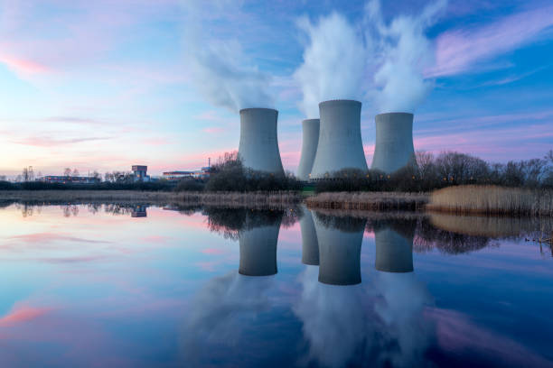

Procastination is the thief of time
We should all give up Procastination, Aug 18, 2023
'Procrastination is the thief of time’. Have you heard this phrase before? Well, it’s an old adage coined by the English writer Edward Young in his 10,000-line poem entitled: The Complaint: or, Night-Thoughts on Life, Death, & Immortality, more simply known as Night-Thoughts. In the poem, Young muses on death and urges us to ‘be wise to-day’ as life and opportunities can slip away quickly.
One of the biggest reasons why homework's get a bad mark or are incomplete is because of procrastination. One of the biggest reasons why opportunities get blown is procrastination. Procrastination has a bad effect on you, your work and your health. Procrastination is an act that everyone takes part everyday, regardless of their situation in their life. It means to put off work for another time when it can be done immediately. To procrastinate means to intentionally and habitually put off or delay doing something till a later time.
Is money the ultimate indicator of hapiness?
The relation between money and hapiness, Aug 19, 2023
What do you think is the highest form of wealth? What does it mean to be wealthy?
The highest form of wealth, I believe, is the ability to wake up morning and say, “I can do whatever I want today.” The ability to whatever you want, whenever you want, with who you want, for as long as you want, is the real form of wealth.
People want to become wealthier to become happier. They associate happiness with wealth. Happiness is a complicated subject as everyone has different views on it. It is subjective. But, if there’s a common denominator in happiness, it’s that people want to control their lives. Having a strong sense of controlling one’s life is a more dependable predictor of happiness than any objective conditions of life we have considered.
More than the salary. More than the size of your house. More than the prestige of your job. More than your luxury possessions. Control over what you want you want to do is the variable that makes people happy. Flexibility in whatever you do in your life is the key factor to a happy and joyous life.
Being wealthy doesn’t necessarily imply being happy. People today are wealthier than they were in the 1950s. But we aren’t as happier. We might have used our greater wealth to buy bigger and better stuff that we have forever longed. But we’ve simultaneously given up more control over time. It’s because we live in a very competitive world. Every second there is a new discovery, a new invention, that we aren’t able to give our minds time to rest. More of us have jobs today that are concerned with sitting on a desk and making decisions and inventing new ideas than a typical 1950s manufacturing job. Our days doesn’t end the moment the office hours end. We are constantly working on our heads, which feels like we are working 24/7. We have lost the control of our schedule.
The computer age has liberated the tools from the office. If your job is to create new contents –– a thought based job –– your tool is your head, which never leaves you. You might be thinking about your projects while you are taking a stroll, while you commute, and when you wake up in the morning. With laptops, smartphones or any kind of portable devices in our hand, we are theoretically productive anywhere, anytime.
Compared to generations prior, control over our time has diminished. Our ability to have control over our time has decreased. And since controlling our time is such a key to happiness, we shouldn’t be surprised that people don’t feel much happier even though we are, on average, richer than ever.
History of Nuclear power in Asia
A brief description about the history of nuclear power in Asia, Aug 20 , 2023

Asia — the continent with the largest population in the world — has achieved significant economic growth within the past decades. In many countries, the rapid population and economic growth has brought a tremendous demand for energy and electricity — one which fossil fuels and hydropower together will not be able to meet. Nuclear power is thus expected to become an important option for meeting the region's long-term electricity needs on a sustainable basis. Asia is the main region in the world where electricity generating capacity and specifically nuclear power are growing significantly.
Asia's first nuclear reactor is the Apsara Research Reactor situated in Mumbai. Apsara was India's first nuclear reactor built at BARC (Bhabha Atomic Research Center) in 1956 to conduct basic research in nuclear physics. The Bhabha Atomic Research Centre (BARC) is India's premier nuclear research facility, headquartered in Trombay, Mumbai, Maharashtra, India. It was founded by Homi Jehangir Bhabha. It was swimming pool type of reactor. It was established to secure the country's long term energy independence, through the use of uranium and thorium reserves found in the monazite sands of coastal regions of South India.
Likewise, the Philippines is the first ASEAN Member State (AMS) to build a nuclear power plant. In response to the oil crisis in 1973, the Philippines decided to build the Bataan Nuclear Power Plant (BNPP). The Bataan Nuclear Power Plant (BNPP) sits on a 389-hectare protected land at Napot Point, a peninsula in the west coast of Morong, Bataan, at the Luzon island. It was the Philippines' only attempt at building a nuclear power plant. It was mothballed due to safety concerns in the wake of the Chernobyl disaster in Ukraine in 1986 and issues regarding corruption.
In contrast to North America and most of Western Europe, where growth in electricity generating capacity and particularly nuclear power has been limited for many years, a number of countries in Asia are planning and building new nuclear power reactors to meet their increasing demand for clean electricity. Currently about two-thirds of the reactors under construction worldwide are in Asia. Currently, in Asia there are about 140 operable nuclear power reactors, about 30-35 under construction and firm plans to build an additional 40-50. Many more are proposed. The greatest growth in nuclear generation is expected in China. The construction and operation of nuclear power plants has been ever growing since the establishment of first nuclear power plants.